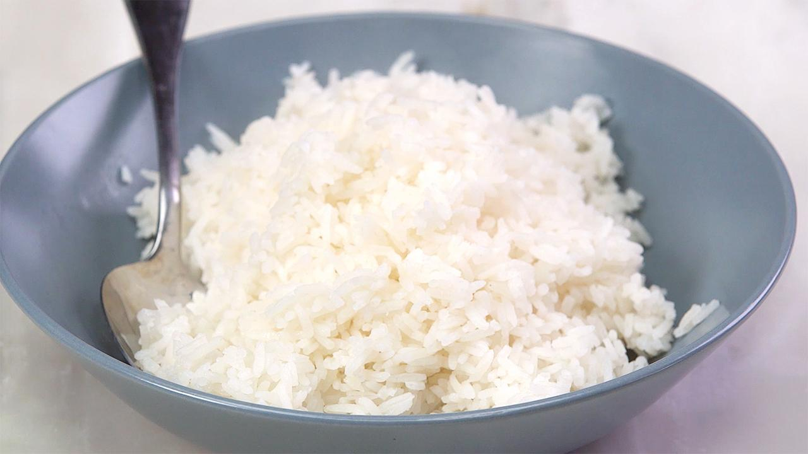

Tips for making perfect Egg Fried Rice
Here are some helpful hints for making this crowd-pleasing meal at home.
- Use cold, leftover cooked rice
- Use medium grain jasmine rice. 
- A blazing hot wok
- Use the biggest pan available
- Don’t overdo the sauce seasonings
Left in the fridge overnight, the rice grains will firm up, making it easier toseparate and decreasing the chances of your fried rice turning out mushy. If you can’t wait, air freshly cooked rice to remove moisture and refrigerate the rice for a few hours before cooking.
My choice for fluffy, sturdy grains that don’t clump or fall apart when fried. Short grain rice tends to be softer and to stick together.
An adequate amount of oil will ensure your ingredients don’t stick to the surface. That’s how restaurants achieve the smoky, “burnt” flavor in their stir-fried dishes. Remember to preheat your wok before adding ingredients.
When you have too many ingredients, the wok doesn’t get hot enough and your ingredients will get soggy causing the rice to clump together. If you prefer, cook each ingredient individually (raw vegetables or meat, egg) and remove to separate plates. Return all the ingredients to the pan at the end for the final mixing and seasoning.
Add just a few tablespoons of my chosen sauce for flavor and then add salt for saltiness and savor. Too much sauce will make your rice mushy.